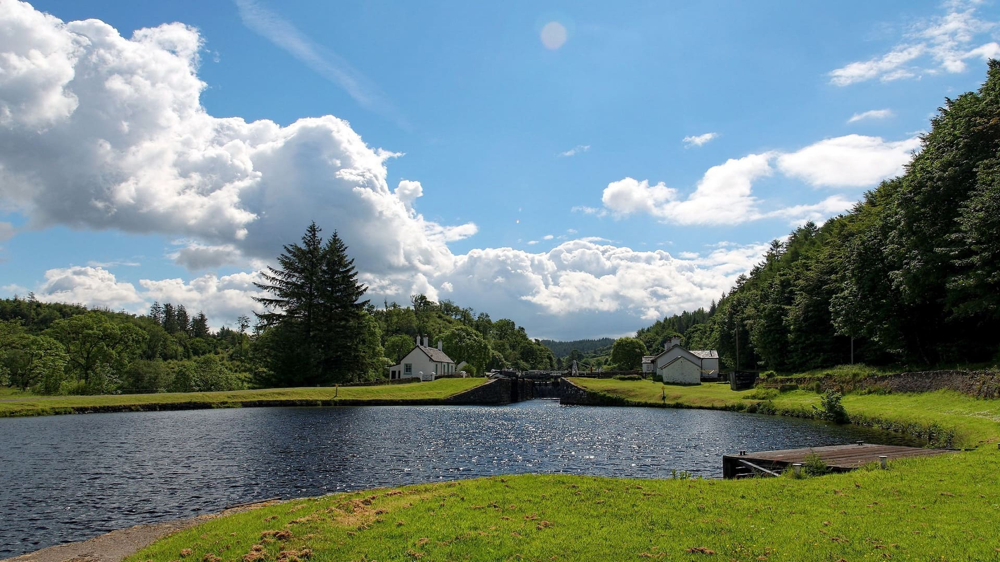
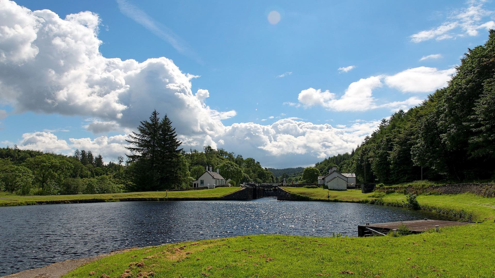

Paisagens naturais mais lindas do Brasil e do mundo!
As lindas paisagens naturais são sempre fontes de encanto.
Lençóis Maranhenses (Brasil)

Não existe nada parecido em todo o mundo.
Jalapão, Tocantins (Brasil)

Jalapão, uma das belezas do Tocantins
Zakynthos (Grécia)

A Ilha de Zakynthos, é conhecida
por ter uma das mais lindas praias do mundo.
Cenotes de Tulum (México)

Os cenotes são piscinas naturais abastecidas pelas águas de rios subterrâneos.
The Grand Canyon (EUA)

O Grand Cayon foi desenhado ao longo de dois bilhões de anos com a ajuda das águas do Rio Colorado.
Avatar Mountain & Wulingyuan (China)

O Parque Wulingyuan, ao noroeste da província de Hunan, na China, um espetáculo natural!


 
